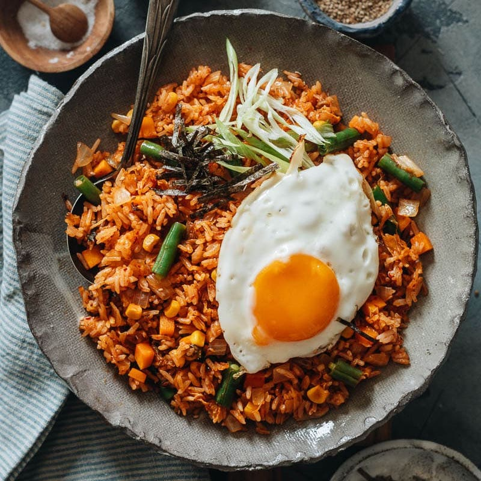

Kimchi Fried Rice

Details
Credit: Kimchi Fried Rice Recipe by Maggie Zhu
Prep Time: 10 min | Cook Time: 5 min | Total Time: 15 min | Servings: 2 to 4 servings
Ingredients
- 1 tbsp of vegetable oil (divided)
- 1 cup of kimchi (chopped)
- 1/2 of a yellow onion (largely diced)
- 2 green onions (sliced with green and white separated)
- 3 cups of cooked rice
- 1 cup of vegetables
- 1 tsp of sesame oil
- Fried egg (optional)
- Shredded crispy seaweed sheet (optional)
- 1/4 cup of kimchi juice
- 1 tbsp of gochujang
- 2 tsp of sesame oil
- 1/2 tsp of soy sauce
Add an Ingredient
Instructions
- Before chopping the kimchi, pour 1/4 cup of kimchi juice in a separate bowl.
- Combine the rest of the sauce ingredients in the bowl with the kimchi juice. Mix until the gochujang is incorporated by mashing it against the bowl to break it up.
- Heat a large skillet over medium-high heat and add 2 tsp of vegetable oil. Add the kimchi and white onions. Stir fry for 30 seconds to release the fragrance.
- Add the rice to the pan. Drizzle the remaining amount of vegetable oil. Cook and stir until the rice begins to crackle (about 1 to 2 minutes).
- Add the vegetables and sauce. Stir to incorporate the sauce so that all of the rice grains are coated. Let the rice cook for another minute to crisp up the bottom.
- Turn off the heat and add sesame oil and green onions. Toss to mix well. Serve hot with optional toppings.